Journey Through the Pipeline
Who am I?
- COOP Student from UC
- Computational Team
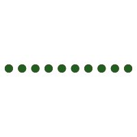
What Have I been doing?
- Mixtape Engineers
trackgencompileqcatac_seq_mixtape
Let’s Git started!
Mixtape Engineers
- Gitlab repo that facilitates team organization
- Set of standards for new projects
- Engineering rigor
Agile Board
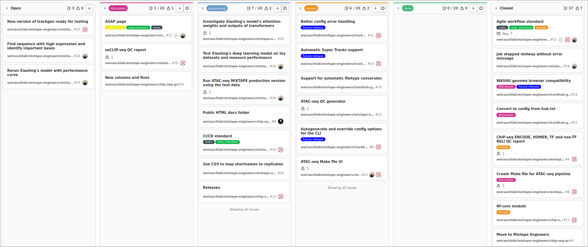
Project Structure

Rationale (why not the wiki?)
- Companion to the ASAP wiki page
- Advanced version control
- Used as an example project
Trackgen
- Generate UCSC trackhub config files

Output
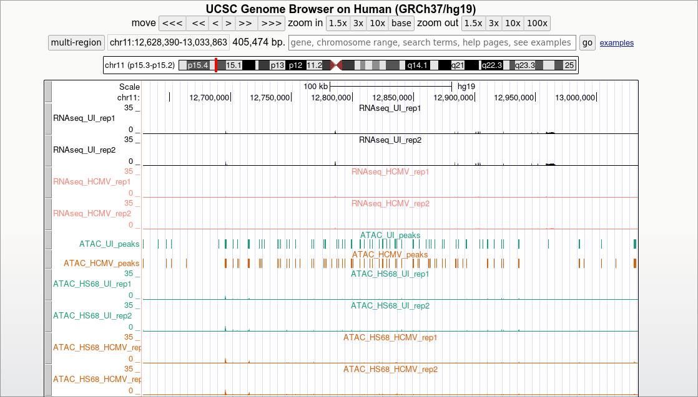
Usage
trackgen --help # get some help trackgen config # generates trackgen config, finds required files trackgen hub # generates hub config
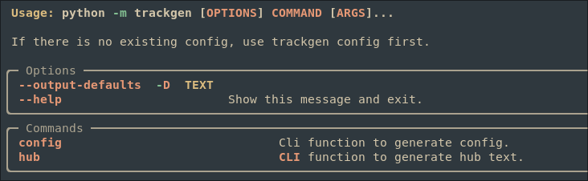
Config
{
"hub": {
"hg19": {
"first.bigwig": {
"bigDataUrl": "first.bigwig",
"type": "bigWig",
"color": "color(#4287f5)"
}
}
}
}
Containers and Modules
- Module is stable, container is unstable
module load trackgen/0.0.1-dev trackgen --help # is equivalent to module load singularity singularity run $TEAM/lew2mz/containers/trackgen --help
Features
- Functional config language (modified JSON/YAML)
- Regex/glob based detection of files
- JSON/YAML to hub conversion
Development strategy
- Unit tests
- Easily extendable
- Automatic Documentation
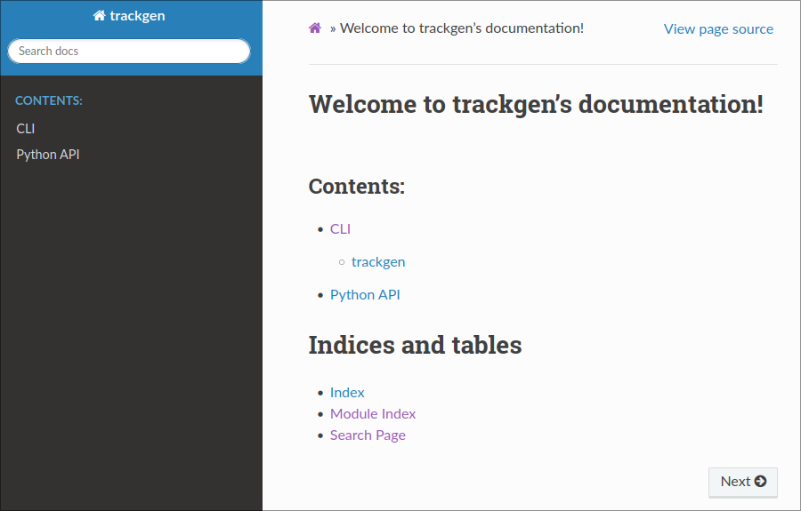
Project structure
trackgen ├── classes.py ├── CLI.py ├── config.py ├── data │ ├── associations.json │ ├── common.json │ ├── complete.json │ ├── defaults.json │ ├── example_config.json │ ├── example_hub.txt │ ├── __init__.py │ ├── __pycache__ │ ├── README.org │ ├── template_page.html │ └── valid_file_extensions.json ├── data_interpreter.py ├── functions.py ├── __init__.py ├── __main__.py └── __pycache__
Architecture
| 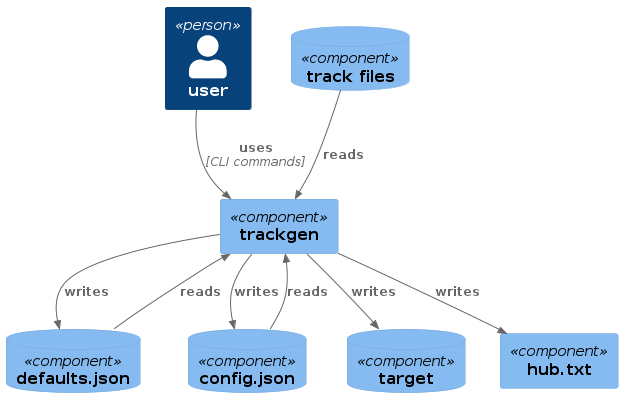 | 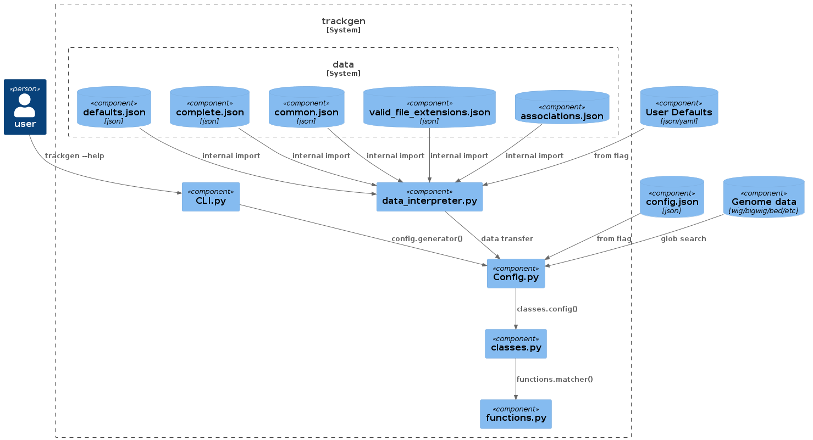 |
Compileqc
- Generate QC sheet from pipeline
- Budget Multiqc
Usage
module load singularity
singularity run $TEAM/lew2mz/containers/compileqc --help
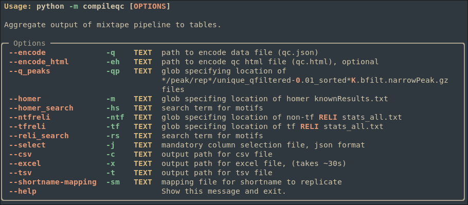
Output
- Configurable shortname
- Different Sheets for each data type
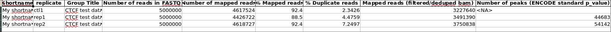
Features
Aggregate the following output:
- Homer
- (TF/NONTF) RELI
- ENCODE
Development strategy
- Test based development
- Object oriented
- Design before code
- Automatic documentation
- Extendable
Project Structure
compileqc ├── cli.py ├── data.py ├── __init__.py ├── __main__.py └── __pycache__
Architecture
| 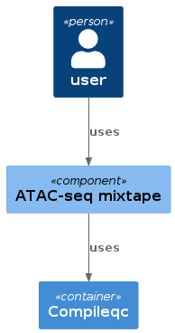 | 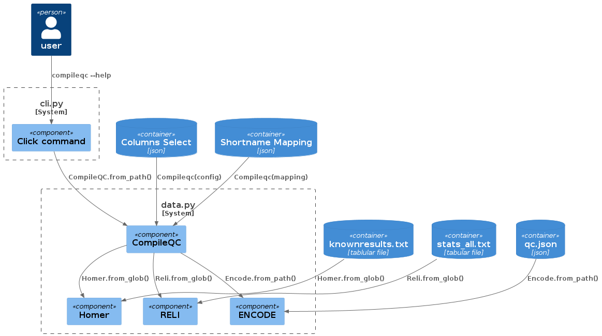 |
Atac seq mixtape
- Nextflow pipeline to automate analysis
Contribution
- Make UI
- compilqc integration
Compileqc integration
- New and improved QC sheet
Implementation details
- Added an easy way to add new flags
- New mapping json input allows for shortname configuration in QC sheet
- No module dependencies, uses singularity containers
Make UI
- Intuitive interface
- Automatic help generation
Error detection
Usage
make # or make help make config # will guide you through initial data entry make config # run it after data entry make run # run the pipeline (will fail)
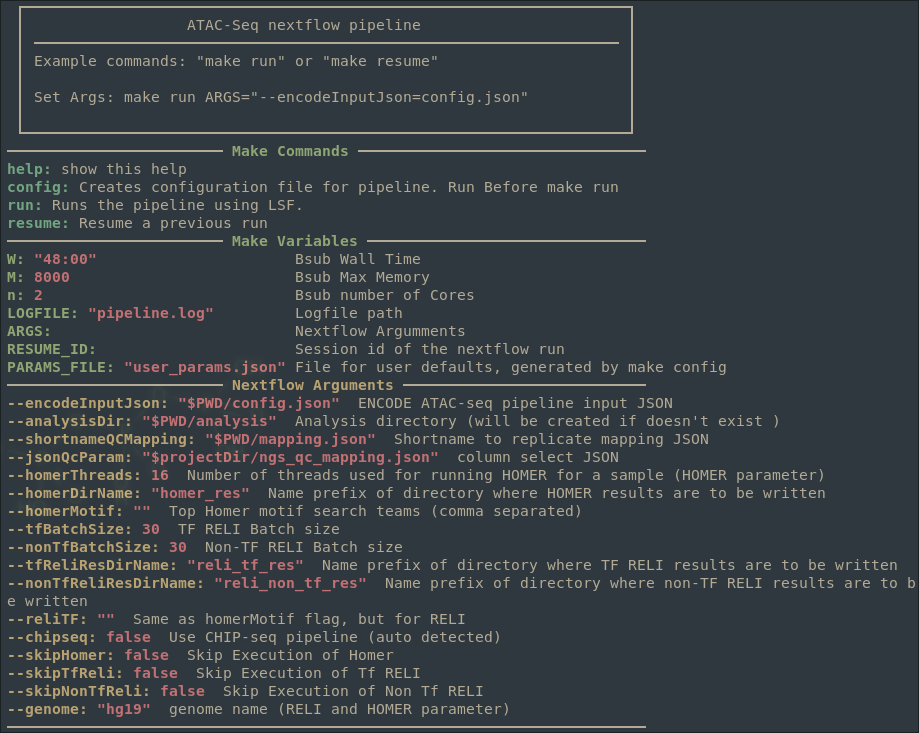
Help code
help: ## show this help @sed -ne "s/^##\(.*\)/\1/p" $(MAKEFILE_LIST) @printf "────────────────────────$(bold)$(blue) Make Commands $(reset)────────────────────────────────\n" @sed -ne "/@sed/!s/\(^[^#?=]*:\).*##\(.*\)/$(green)$(bold)\1$(reset)\2/p" $(MAKEFILE_LIST) @printf "────────────────────────$(bold)$(blue) Make Variables $(reset)───────────────────────────────\n" @sed -ne "/@sed/!s/\([^ ]*\) *?=\(.*\)##\(.*\)/$(blue)$(bold)\1:$(magenta)\2$(reset)\3/p" $(MAKEFILE_LIST) @printf "────────────────────────$(bold)$(yellow) Nextflow Arguments $(reset)───────────────────────────\n" @sed -ne "/@sed/!s/params.\([a-zA-Z]*\) *= *\(.*\)\/\/\(.*\)/$(yellow)$(bold)--\1:$(magenta) \2$(reset)\3/p" nextflow.config @printf "───────────────────────────────────────────────────────────────────────\n"
Advantages over the old method
- Users don’t have to learn a new configuration framework
- Options have sane defaults
- More intuitive
- Automatic documentation